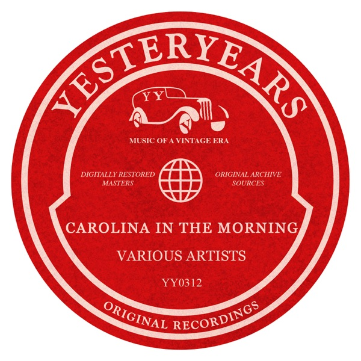
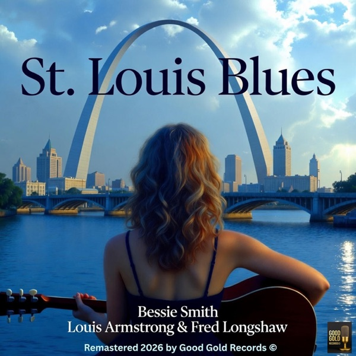
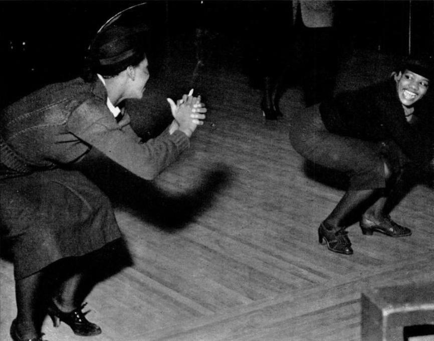
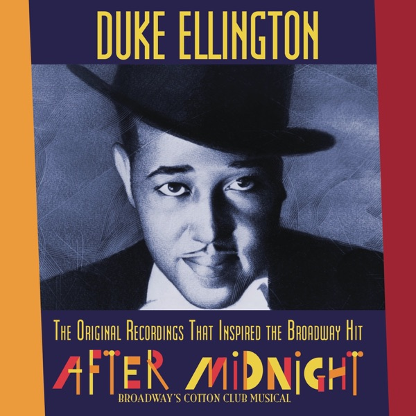
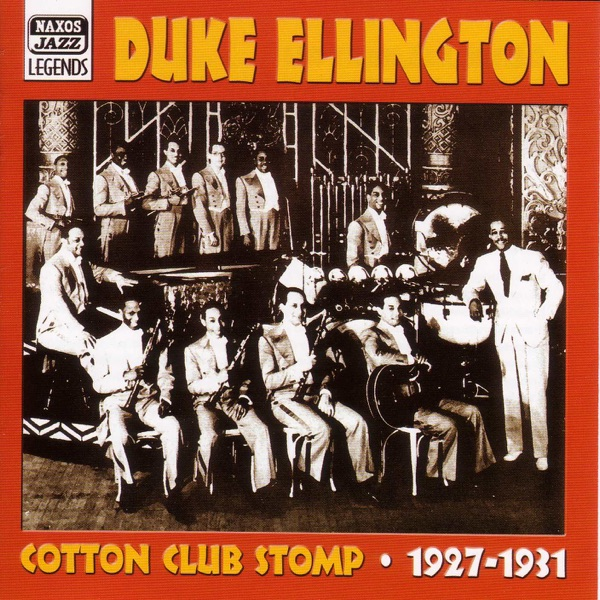
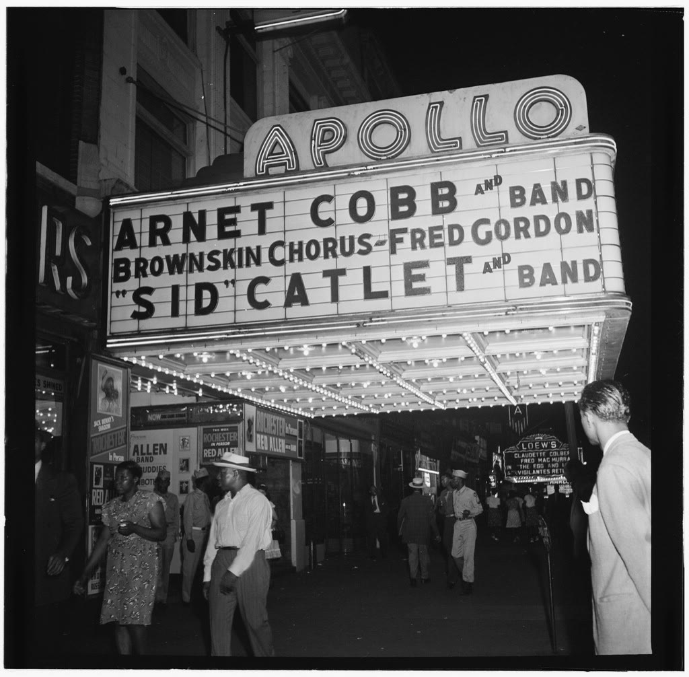
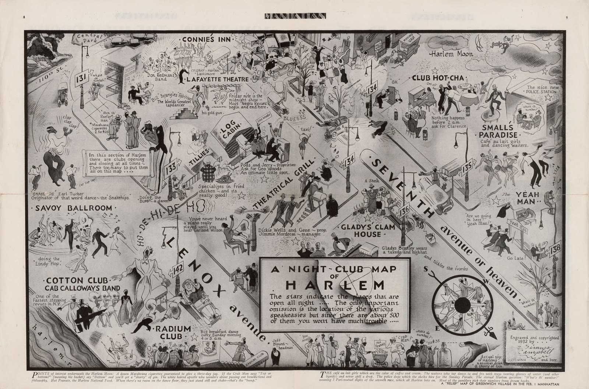
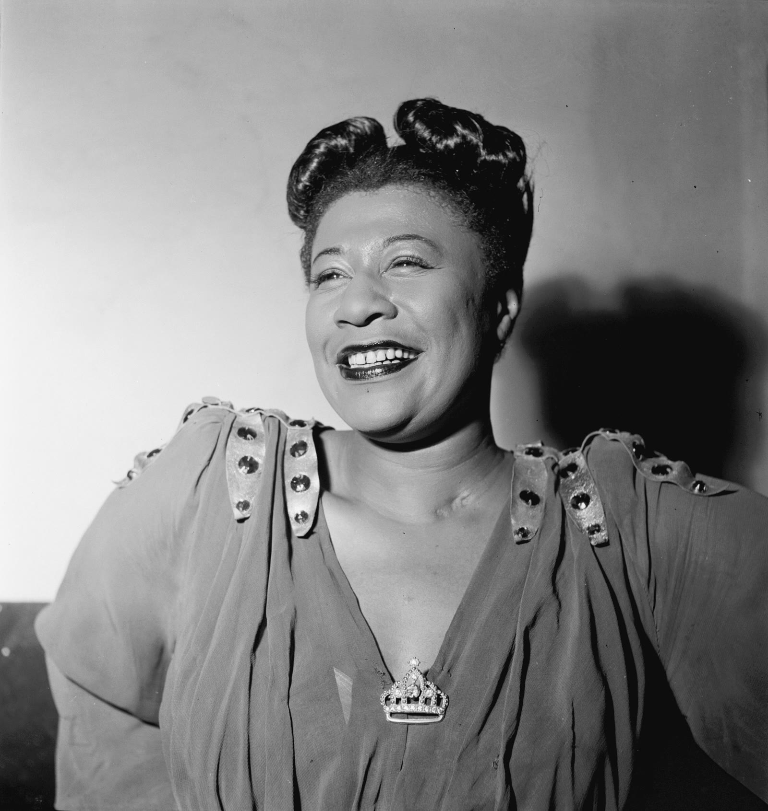
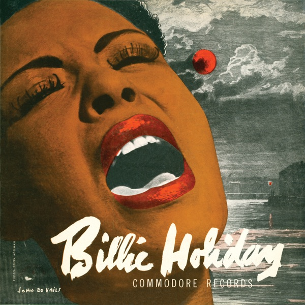

SoR Magazine #5 · Harlem Renaissance · tot slot
Tijdlijn
Van de Grote Migratie in 1916 tot Strange Fruit in 1939: blader door een kwart eeuw Harlem, met een fragment bij bijna elk jaar.
Scroll, sleep of gebruik de pijltjes →
De Grote Migratie komt op gang
Vanaf ongeveer 1916 verlaten honderdduizenden zwarte Amerikanen het Zuiden voor de steden in het noorden. Fabrieken hebben door de oorlog arbeiders nodig, en wie vertrekt, ontsnapt ook aan de wetten die zwarte burgers in het Zuiden beperken. Tussen 1910 en 1930 groeit het aandeel zwarte inwoners van Centraal-Harlem van ongeveer tien naar ongeveer zeventig procent.
Crazy Blues
Op 10 augustus 1920 neemt Mamie Smith voor Okeh Crazy Blues op. Er worden in minder dan een jaar een miljoen exemplaren van verkocht, vooral aan zwarte luisteraars. Platenmaatschappijen merken dat er een markt is en gaan zwarte zangeressen en bands opnemen, de zogeheten race records. Luister hoe vlak en rechtstreeks Smith zingt.

Carolina Shout
James P. Johnson neemt Carolina Shout op, een van de eerste jazzpianosolo's op plaat. Duke Ellington leert het noot voor noot van de pianorol uit 1921. In hetzelfde jaar verschijnt in The Crisis het gedicht The Negro Speaks of Rivers van Langston Hughes, die dan negentien is. Luister naar de linkerhand, die de maat houdt.

Bessie en het Cotton Club
Bessie Smith tekent bij Columbia en heeft met Downhearted Blues meteen een hit: zo'n 780.000 exemplaren in een half jaar. Hetzelfde jaar neemt Owney Madden in Harlem het Cotton Club over en geeft het die naam. Op Broadway gaat de show Runnin' Wild met de Charleston van James P. Johnson in première.

Een diner en een trompettist
Het tijdschrift Opportunity organiseert een diner waar jonge zwarte schrijvers kennismaken met witte uitgevers. Louis Armstrong komt uit Chicago naar New York om te spelen in het orkest van Fletcher Henderson, de beste zwarte band van het land. Ook Duke Ellington begint dit jaar als leider van zijn eigen groep in Harlem.
The New Negro
In maart verschijnt het speciale nummer Harlem: Mecca of the New Negro van Survey Graphic, later dat jaar uitgebreid tot het boek The New Negro. Op 14 januari neemt Bessie Smith St. Louis Blues op, met Armstrong op cornet. Zora Neale Hurston komt naar New York, en Langston Hughes schrijft The Weary Blues.


Savoy en Fire!!
Op 12 maart opent het Savoy Ballroom op Lenox Avenue, een dansvloer zonder kleurgrens. Hughes, Hurston en Wallace Thurman geven het tijdschrift Fire!! uit, dat maar één nummer haalt. Hughes brengt zijn eerste bundel The Weary Blues uit, en Duke Ellington sluit een contract met manager Irving Mills.


Duke in het Cotton Club
Op 26 oktober neemt Ellington Black and Tan Fantasy op. Op 4 december wordt zijn orkest het huisorkest van het Cotton Club, en door de radio-uitzendingen hoort het hele land ze. In oktober neemt hij ook Creole Love Call op, met de zangeres Adelaide Hall, die geen woorden zingt maar klanken.

West End Blues
Louis Armstrong neemt in Chicago met zijn Hot Five West End Blues op, een nummer dat begint met een beroemde inleiding op trompet. In Harlem gaat Yamekraw in première, een rapsodie van James P. Johnson, vernoemd naar een zwarte gemeenschap bij Savannah, in een orkestratie van William Grant Still.

Ain't Misbehavin'
Fats Waller en tekstschrijver Andy Razaf schrijven Ain't Misbehavin' voor de revue Hot Chocolates in Connie's Inn. Armstrong speelt mee in het orkest en steelt de show met zijn zang. In oktober stort de beurs in en begint de Depressie. In december verschijnt de film Black and Tan met Duke Ellington.

Mood Indigo
In oktober neemt Ellington Mood Indigo op, met de blazers in een ongewone verdeling die een vierde stem suggereert: de trombone bovenin, de klarinet onderin. Langston Hughes publiceert zijn eerste roman, Not Without Laughter, die de Harmon Gold Medal wint. Luister hoe zacht en donker het nummer klinkt.
Cab neemt het over
Op 4 februari vertrekt Ellington uit het Cotton Club om op tournee te gaan. Het orkest van Cab Calloway neemt zijn plaats in en maakt Minnie the Moocher tot zijn nummer. Het wordt genoemd als de eerste plaat van een zwarte muzikant die een miljoen keer werd verkocht. In 1932 is Calloway het voorbeeld voor een Betty Boop-tekenfilm.

Het Apollo
Op 26 januari opent het Apollo Theater op 125th Street, nu gericht op het zwarte publiek van Harlem. Op 21 november wint de zeventienjarige Ella Fitzgerald de amateuravond, nadat ze besloot te zingen in plaats van te dansen. Chick Webb neemt dat jaar Stompin' at the Savoy op, een nummer voor de dansvloer.

Rellen en een verhuizing
In 1935 breken in Harlem rellen uit. Het Cotton Club verhuist in 1936 naar Broadway en sluit in 1940 definitief, na hogere huren, een veranderende smaak en een onderzoek van de belastingdienst. Ella Fitzgerald komt later in 1935 in het orkest van Chick Webb en zingt voortaan in het Savoy Ballroom.
Hurston en het einde van een tijdperk
Op 26 september overlijdt Bessie Smith na een auto-ongeluk bij Clarksdale in Mississippi. Zora Neale Hurston publiceert Their Eyes Were Watching God. De beweging die later Harlem Renaissance zou heten, is dan al uitgedoofd, maar de gedichten, platen en verhalen die ze maakte blijven bestaan.

A-Tisket, A-Tasket
Ella Fitzgerald maakt met het orkest van Chick Webb een hit van het kinderliedje A-Tisket, A-Tasket, dat ze mede schreef. Een jaar eerder had Webb in het Savoy Ballroom een band-battle gewonnen van het orkest van Benny Goodman. In 1939 overlijdt hij, en Ella neemt zijn band over.
Strange Fruit
Op 20 april neemt Billie Holiday voor het label Commodore Strange Fruit op, een lied van de leraar Abel Meeropol over lynchen. Columbia had het geweigerd. Het wordt haar best verkochte plaat, ongeveer een miljoen exemplaren, en een symbool van de strijd tegen lynchpartijen.
